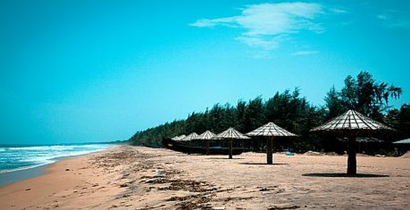
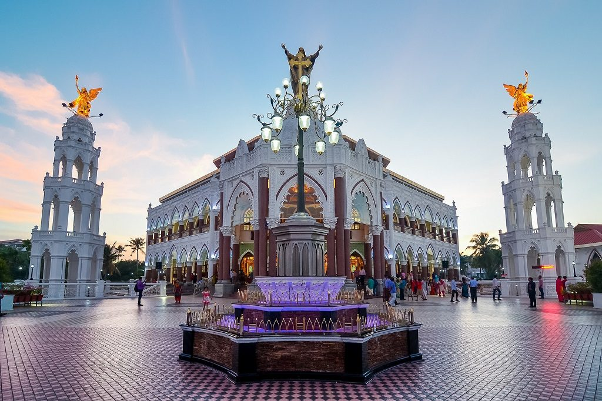

MATTANCHERRY PALACE
Mattancherry Palace, located in Palace Road and built by the Portuguese as early as 1557, is considered to be one of the important places to visit in Cochin in 1 day. Popularly known as Dutch Palace, it has the style and architecture that resembles a typical traditional Kerala house with four individual wings and a patio in between. The place is known for offering the best experience of Cochin sightseeing.Today the place exhibits centuries-old architectures and various social and cultural imprints left behind by foreigners. Declared as a heritage site by the government, Mattancherry has been an inspiration to historians, film-makers, travellers and artistes alike. Amongst all the Ernakulam tourist places, this museum is one of the most prominent attractions.
FORT KOCHI

Fort Kochi, the western part of the Kochi city of Ernakulam district in Kerala. It is about 12 km away from Ernakulam Town. Fort Kochi has played an important role in the history of Kerala. Fort Kochi also has several attractions like the Santa Cruz Basilica. Fort Kochi also houses many historical monuments such as the St. Francis Church, the first church of Vasco da Gama, the Dutch Seminary, the China Vela and many others. The Indian Navy’s ship, Dronacharya, is located in Fort Kochi. Fort Kochi was the first European township in Kerala. The Fort Kochi carnival celebrates New Year’s Eve every year. Thousands of people come to visit this carnival. The car rides and other festive events are also part of the carnival.
CHERAI BEACH

Located on the north end of Vypin island in Kochi, Cherai beach is a 15 km stretch of wild and rugged beauty. Although not overwhelmed by hotels or major restaurants, the beach is dotted with small shacks selling local snacks like pakoras and chips. Stunning lagoons, wide paddy fields and coconut grooves adorn the road to the beach. Ernakulam sightseeing is not complete without a visit to Cherai beach.The beach is around 10 km long and is ideal for swimming as the tide is mostly low and the waves are gentle. It is known for frequent dolphin sightings. It is one of the few places where the backwaters and the sea can be seen in a single frame.
HILL PALACE

Hill Palace is a prominent Heritage museum, which exhibits countless archaeological relics and belongings of the Maharaja of Kochi. This famous palace, which was built in 1865, comprises forty-nine buildings with enchanting gardens and a children’s park. Of all the majestic Ernakulam tourist places, Hill Palace is certainly one of the top attractions.Built in 1865, it is now famous for being a full-fledged Ethno-Archaeological Museum and Kerala's first-ever Heritage Museum. The palace complex itself comprises 49 buildings and is built in the traditional Kerala style of architecture. It has over 52 acres of terraced land around it.
EDAPALLY ST. GEORGE FORANE CHURCH

Edappally, about 10 km away from the city, is famous for the St. George Forane Church, one of the oldest Roman Catholic Churches in the State. The church, popularly known as Edappally Pally, was a small structure at the time of its construction in 594 AD. In 1080 AD, a bigger church was built adjacent to the old one to accommodate the congregation that had grown greatly in number. The Edappally pilgrim church was the richest Catholic shrine in Kerala. Due to the uncountable miracles of Edappally St George, the Catholic Church were deciding to elevate this miraculous Church to the status of a National Shrine Basilica.100000+ holy masses were conducted in every year in this holy land.
WONDERLA

The loudest, craziest, and the most amazing part of town. This simply is not just an amusement park, but a world of breath-taking charm. Get on one of the 50+ exhilarating rides, or simply laze by the pool under the bright sun. But whatever you do, here, everybody gets a little closer. And that is why we are the Amazement Park.Wonderla has evolved into one of the premier amusement parks in the country. Located in Kochi, it is also regularly rated among the most visited spots in Kerala. People from across the country throng here to enjoy a multitude of rides and attractions.The family friendly vibe prevalent in the park is hard to miss.Everyone who ever goes to Wonderla is assured a memorable experience that keeps getting better with each visit.